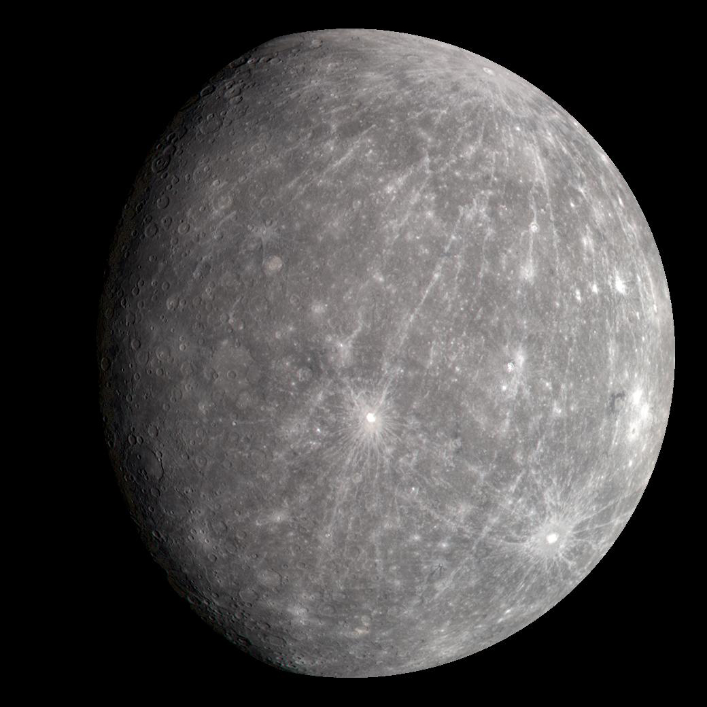
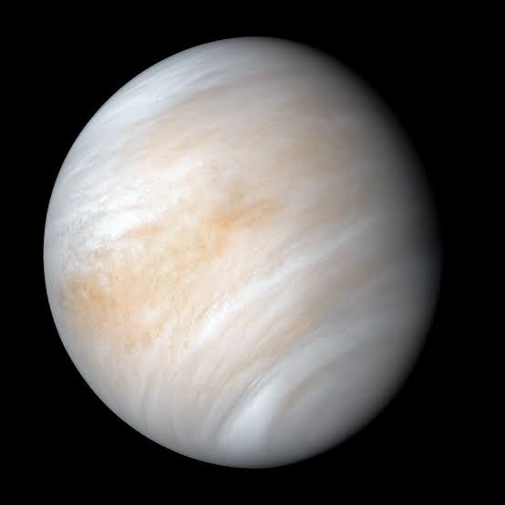
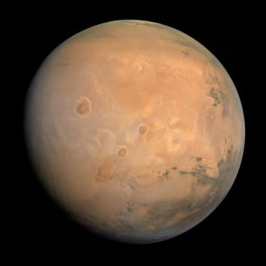
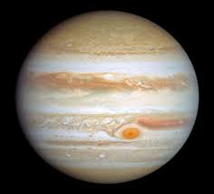
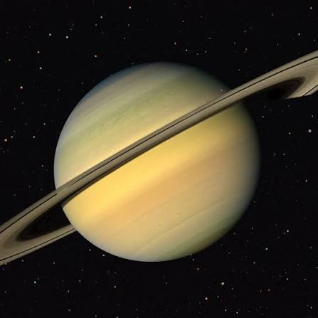
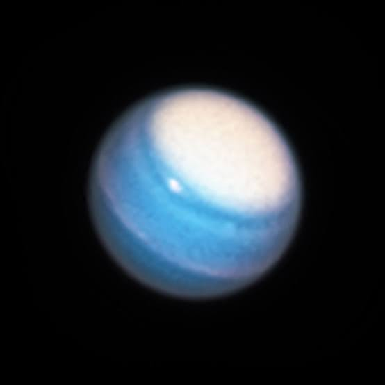
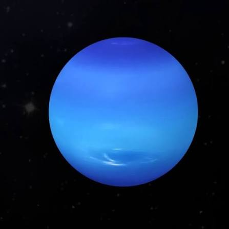

The Solar System
⠀⠀⠀⠀⠀⠀⠀⠀⠀⠀⠀⠀⠀⠀⠀⠀⠀⠀⠀⠀⣀⡀⠀⠀⠀⠀⠀⠀⠀⠀⠀ ⠀⠀⠀⠀⠀⢠⠄⠀⡐⠀⠀⠀⠀⠀⠀⠀⠀⠀⠄⠀⠳⠃⠀⠀⠀⠀⠀⠀⠀⠀⠀ ⠀⠀⠀⠀⠀⡈⣀⡴⢧⣀⠀⠀⣀⣠⠤⠤⠤⠤⣄⣀⠀⠀⠈⠀⠀⠀⠀⠀⠀⠀⠀ ⠀⠀⠀⠀⠀⠀⠀⠘⠏⢀⡴⠊⠁⠀⠄⠀⠀⠀⠀⠈⠙⠢⡀⠀⠀⠀⠀⠀⠀⠀⠀ ⠀⠀⠀⠀⠀⠀⠀⠀⣰⠋⠀⠀⠀⠈⠁⠀⠀⠀⠀⠀⠀⠀⠘⢶⣶⣒⡶⠦⣠⣀⠀ ⠀⠀⠀⠀⠀⠀⢀⣰⠃⠀⠀⠀⠀⠀⠀⠀⠀⠀⠀⠀⠂⠀⠀⠈⣟⠲⡎⠙⢦⠈⢧ ⠀⠀⠀⣠⢴⡾⢟⣿⠀⠀⠀⠀⠀⠀⠀⠀⠀⠀⠀⠀⠀⠀⠀⠀⣸⡰⢃⡠⠋⣠⠋ ⠐⠀⠞⣱⠋⢰⠁⢿⠀⠀⠀⠀⠄⢂⠀⠀⠀⠀⠀⣀⣠⠠⢖⣋⡥⢖⣩⠔⠊⠀⠀ ⠈⠠⡀⠹⢤⣈⣙⠚⠶⠤⠤⠤⠴⠶⣒⣒⣚⣨⠭⢵⣒⣩⠬⢖⠏⠁⢀⣀⠀⠀⠀ ⠀⠀⠈⠓⠒⠦⠍⠭⠭⣭⠭⠭⠭⠭⡿⡓⠒⠛⠉⠉⠀⠀⣠⠇⠀⠀⠘⠞⠀⠀⠀ ⠀⠀⠀⠀⠀⠀⠀⠀⠀⠈⠓⢤⣀⠀⠁⠀⠀⠀⠀⣀⡤⠞⠁⠀⣰⣆⠀⠀⠀⠀⠀ ⠀⠀⠀⠀⠀⠀⠿⠀⠀⠀⠀⠀⠉⠉⠙⠒⠒⠚⠉⠁⠀⠀⠀⠁⢣⡎⠁⠀⠀⠀⠀ ⠀⠀⠀⠀⠀⠀⠀⠀⠀⠀⠀⠀⠀⠀⠂⠀⠀⠀⠀⠀⠀⠀⠀⠀⠀⠀⠀⠀⠀⠀⠀
Mercury 🪨

As the smallest planet in our solar system and the closest to the Sun, Mercury is a small, cratered world of extreme temperatures. It zips around the Sun faster than any other planet, completing a full orbit in just 88 Earth days. Despite its proximity to our star, it isn't actually the hottest planet due to its virtually non-existent atmosphere.
Venus☄️

Often called Earth’s "twin" because of its similar size and structure, Venus is actually a hellish, toxic world shrouded in thick clouds of sulfuric acid. Its crushingly dense atmosphere traps heat in a runaway greenhouse effect, making it the hottest planet in the solar system. Spinning in the opposite direction of most other planets, Venus turns so slowly that a single day lasts longer than its year.Earth 🌎
 Earth is our vibrant ocean home and, so far, the only planet in the universe known to harbor life. Rich in
liquid water and protected by a perfectly balanced atmosphere, it provides the ideal conditions for millions of
species to thrive. From its churning core to its protective magnetic field, everything about Earth works
together to sustain life.
Earth is our vibrant ocean home and, so far, the only planet in the universe known to harbor life. Rich in
liquid water and protected by a perfectly balanced atmosphere, it provides the ideal conditions for millions of
species to thrive. From its churning core to its protective magnetic field, everything about Earth works
together to sustain life.
Mars🔴

Known as the Red Planet due to the iron oxide—or rust—covering its surface, Mars is a cold, dusty, desert world. It features towering volcanoes like Olympus Mons and vast canyon systems that put Earth's Grand Canyon to shame. Scientists continue to explore Mars with rovers to uncover whether liquid water, and perhaps primitive life, once existed on its surface.Jupiter🟠

Jupiter is a massive gas giant so large that all the other planets in the solar system combined could fit inside it. Famous for its swirling colorful storms, its most iconic feature is the Great Red Spot, a giant storm that has raged for centuries. Accompanied by dozens of moons, Jupiter acts like a mini solar system of its own deep within our neighborhood.Saturn🪐

Saturn is best known for its breathtaking and complex ring system, composed mostly of countless chunks of ice and rock. Like Jupiter, it is a massive gas giant made predominantly of hydrogen and helium, adorned with subtle yellow atmospheric bands. With dozens of diverse moons, including titanically unique worlds like Titan and Enceladus, Saturn remains one of the solar system's true visual wonders.Uranus🔵

Uranus is an icy gas giant distinguished by its unique side-ways tilt, causing it to essentially roll around the Sun like a ball. Its pale cyan color comes from methane in its cold atmosphere, which holds the title for the lowest temperatures recorded on a planet. Along with a faint set of rings, Uranus experiences bizarre, extreme seasons that each last over 20 Earth years.Neptune🌀

Dark, cold, and whipped by supersonic winds, Neptune is the outermost official planet in our solar system. Its striking deep-blue color is caused by atmospheric methane, giving this ice giant a mesmerizing appearance. Located more than 30 times farther from the Sun than Earth, it takes a staggering 165 Earth years to complete just one single orbit.